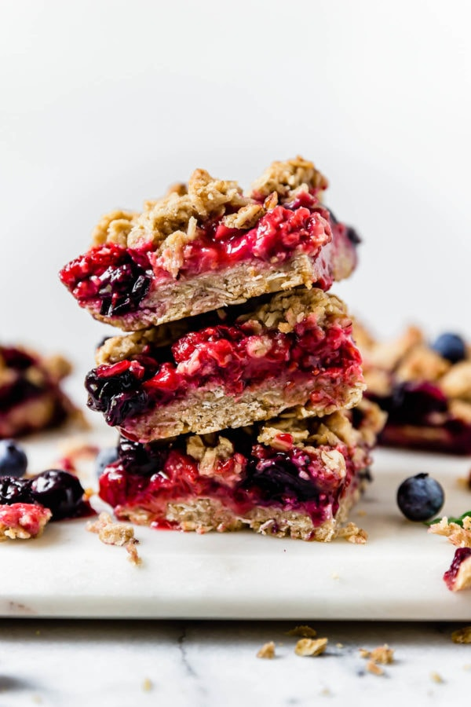
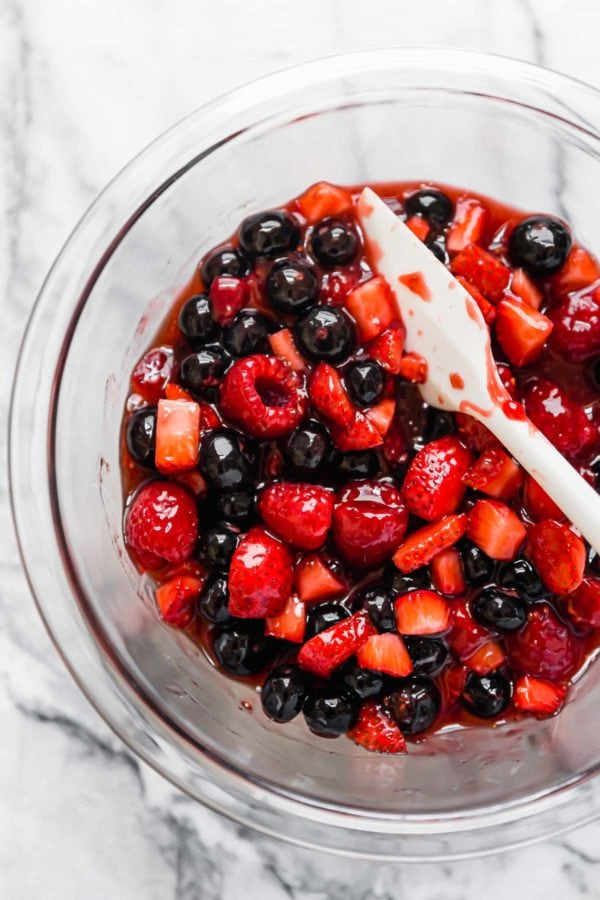
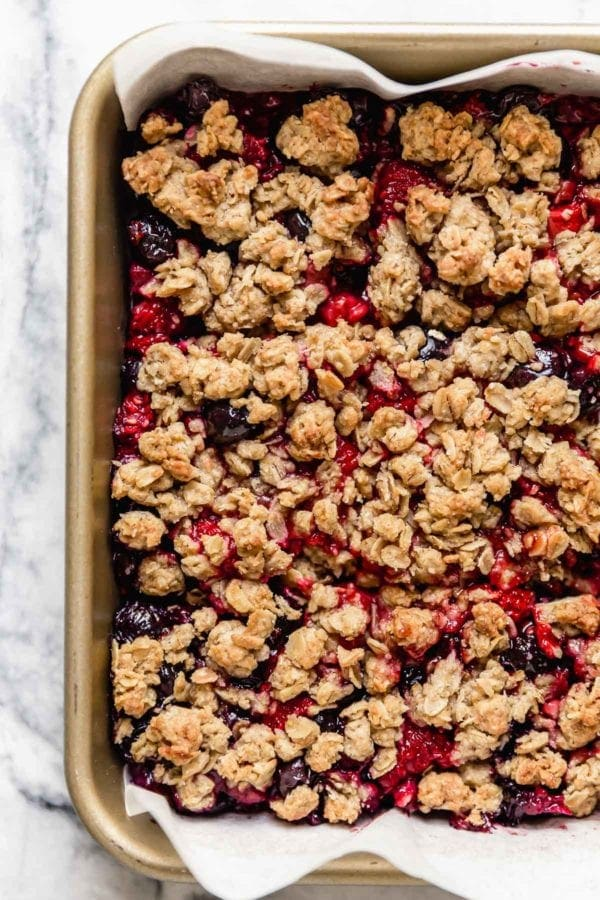

Ingredients
- 1 ¾ cups old-fashioned rolled oats
- ¾ cup all-purpose flour
- ⅓ cup brown sugar, packed
- Zest of 1 lemon (~2 tsp.)
- ½ tsp. baking powder
- ¼ tsp. cinnamon
- ¼ tsp. salt
- ½ cup (8 Tbsp.) unsalted butter, softened to room temperature – may substitute coconut oil or vegan butter for dairy-free and/or vegan
- ½ tsp. pure vanilla extract
- 2 ½ cups fresh berries (we used 1 cup each diced strawberries and blueberries + ½ cup raspberries)
- ½ cup fruit-sweetened strawberry or raspberry jam (such as Crofters, Trader Joe’s or Thrive Market)
- ½ tsp. pure vanilla extract
- Pinch of salt
For the Filling:
Directions
- Preheat the oven to 375℉. Line an 8×8-inch square baking pan with parchment paper.
- In a bowl, mix together the oats, flour, brown sugar, lemon zest, baking powder, cinnamon, and salt.
- Add the softened butter and vanilla and, using a large spoon or your hands, work the butter into the oat mixture until you get a crumbly dough that will stick together if you pinch it between your fingers.
- Measure out 1 ½ cups of the crust and crumb topping mixture and set aside in the refrigerator.
- Press the remaining crust mixture into the bottom of the parchment paper-lined baking pan using the back of a spoon or spatula or slightly damp fingers. Press the mixture into the pan firmly then use a fork to prick the crust 8-10 times.
- Bake the crust for 10-12 minutes or until the edges look just slightly brown and the crust starts to puff and look set.
- While the crust is baking, wipe out the bowl you used to mix the crust and add the filling ingredients. Stir to combine.
- Remove the crust from the oven then spread the filling in an even layer over the hot crust. Crumble the remaining crust mixture over the top of the filling.
- Bake for 30-35 minutes or until the crust is lightly browned and the filling is bubbling.
- Remove from the oven and place the pan on a wire rack and allow the bars to cool completely then transfer the pan to the fridge for at least 2 hours before cutting.
- To cut cooled bars, use the parchment paper to lift the bars onto a cutting board then cut into 16 squares.
- Store leftover bars in a covered container in the fridge for up to 4 days.